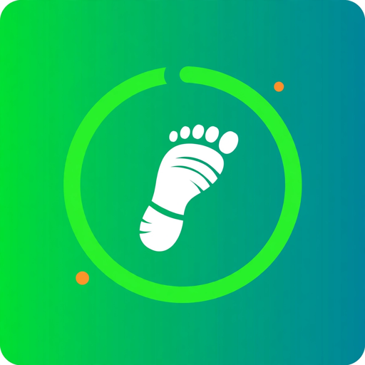
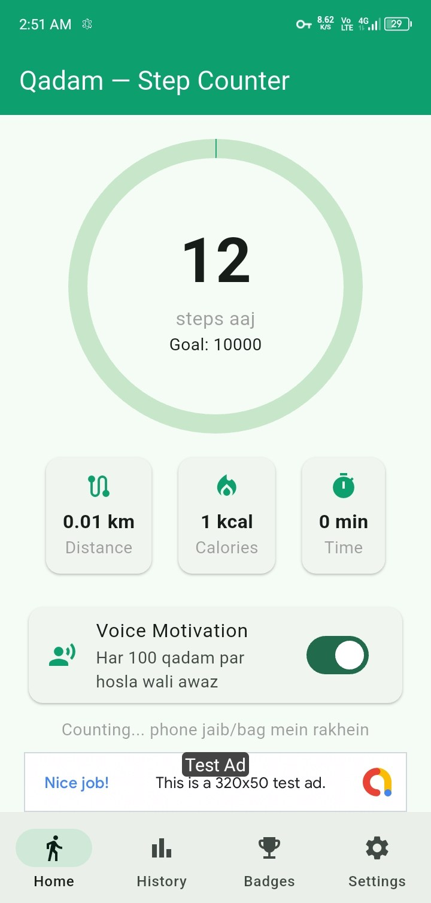
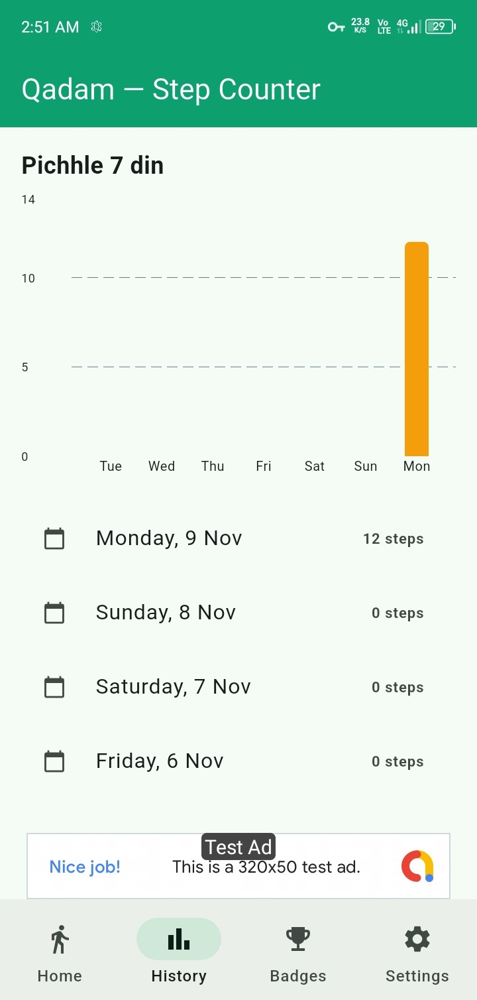
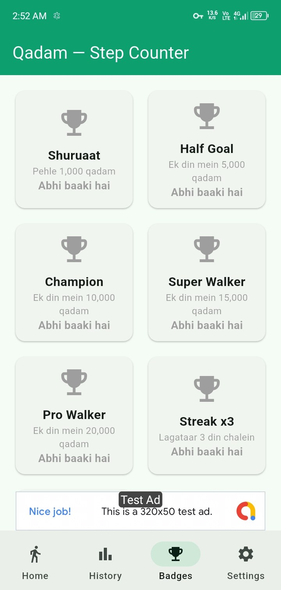

Count your daily steps, distance and calories — simple, light & free.
Har qadam ginay ga — sehat ka saathi, bilkul muft!
⬇ Download Qadam


Walking is the simplest exercise in the world. It needs no gym, no equipment and no money — yet doctors agree it is one of the best habits for your heart, your weight, your sugar level and your mood. The hard part is not walking; the hard part is staying consistent. That is exactly the problem Qadam was made to solve.
Qadam (قدم — an Urdu word that means "a step") counts every step you take during the day using your phone's built-in step sensor. There is no account to create and no internet needed. Open the app in the morning, keep your phone in your pocket, and walk. A friendly voice cheers you on after every 100 steps, your goal ring fills up as you move, and at the end of the day you can see your steps, distance, calories and walking time at a glance.
Small steps every day beat one big effort once a month. Whether your goal is losing weight, controlling sugar, or simply feeling more active, Qadam keeps you honest and motivated — one qadam at a time. Read our practical tips to reach 10,000 steps a day and the proven health benefits of daily walking to get the most out of your walks.
Why we built this app, who it is for, and what makes it different.
Step-by-step guide: install, permissions, goals, history and badges.
Simple, realistic ways to walk more every single day.
What daily walking does for your heart, weight, sugar and mind.
How many steps you really need, the calorie math, and a 4-week starter plan.
Eight reasons the early walk beats every other walk of the day.
Walking daily but not improving? One of these mistakes is probably why.
Fit, cushion and flexibility — a simple guide to pain-free walking.
Answers about accuracy, battery, privacy and troubleshooting.
Questions, feedback or a problem with the app? Write to us.
Qadam aap ka step data sirf aap ke phone mein rakhta hai — hum aap ka personal data nahi bechte.